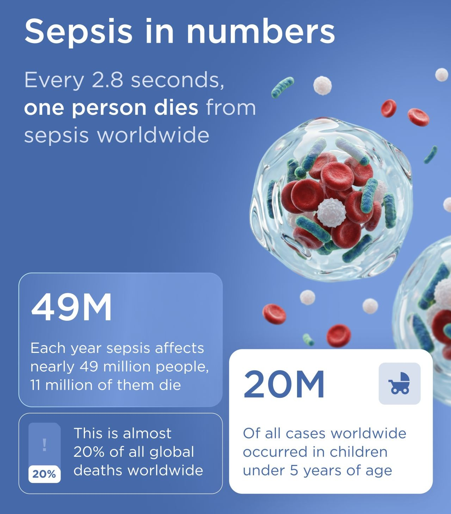
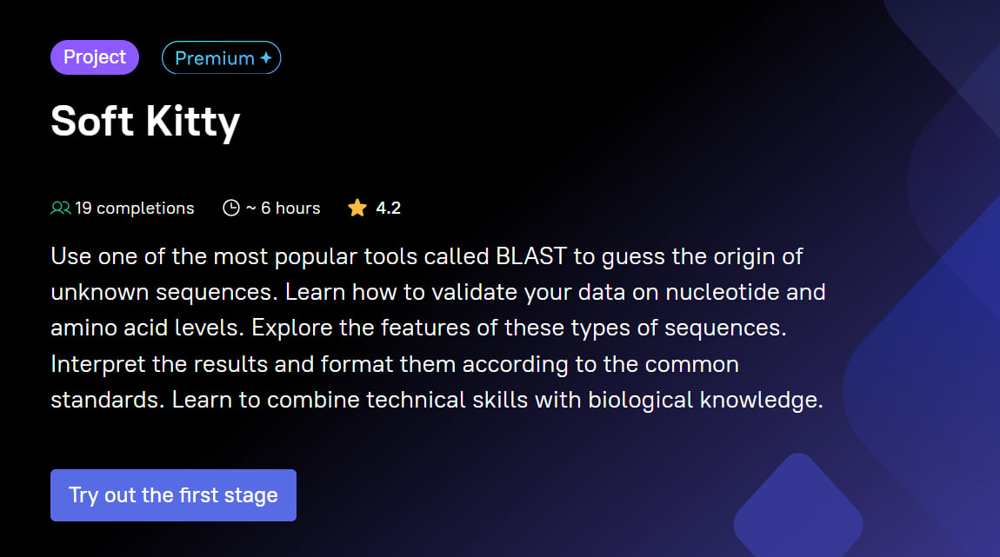
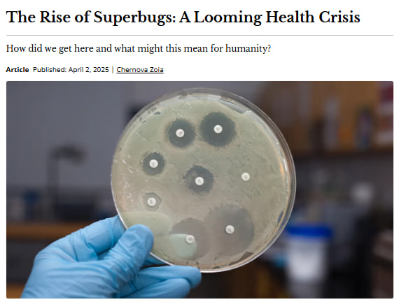

MEDICAL & SCIENTIFIC WRITING
Regulatory documentation, clinical evidence, and scientific content — accurate, compliant, review-ready.
My work sits at the intersection of biochemistry, regulatory requirements, and communication. I translate complex clinical and scientific evidence into documents that are accurate, audience-appropriate, and ready for review — whether for regulators, HCPs, or patients.
CASE STUDY #1. REGULATORY DOCUMENTATION (CSRs, IBs, CLINICAL PROTOCOLS)
Format: Clinical Study Reports (CSRs), Investigator's Brochures (IBs), Clinical Protocols
Context: Pharmaceutical clients requiring regulatory-compliant documentation
What I did:
• Developed CSRs, IBs, and Clinical Protocols in accordance with FDA and EMA guidelines
• Structured complex clinical data into regulatory format, ensuring consistency across documents
• Applied ICH-GCP principles to clinical documentation
Relevance: Core regulatory writing formats — the foundation for any medical writing role in pharma, CROs, or regulatory affairs. This is where my biochemistry background meets regulatory precision.
CASE STUDY #2. PHARMACEUTICAL & MEDICAL COMMUNICATIONS
Clients: Pfizer, Teva, Sanofi, RadioMedSynthesys
What I did:
• Authored 100+ educational materials, conference materials, and scientific content for Pfizer and Teva (Academy of Innovative Education)
• Produced 5 long-form medical marketing pieces for Sanofi (freelance)
• Managed corporate communications for RadioMedSynthesys (radiopharmaceuticals for oncology) — 50+ presentations, infographics, and articles on radionuclide diagnostics
• Translated 20+ medical documents between English, Russian, and Spanish
Result: Expanded partner clinic reach for RadioMedSynthesys; strengthened Sanofi brand positioning through scientific storytelling.
Relevance: Direct experience with pharma brand, regulatory, and HCP communication — understanding how medical content functions across marketing, medical affairs, and patient education.
CASE STUDY #3. EFFERON: CLINICAL CONTENT & EVIDENCE TRANSLATION
Client: Efferon (hemadsorption medical devices)
Challenge: Build clinical credibility for a niche device in intensive care and pediatric sepsis, using published trial data, not marketing claims.
What I did:
• Analysed published clinical trial data and translated it into clinician-facing content
• Developed evidence summaries and HCP materials focused on the adult and pediatric sepsis gap
• Maintained an evidence-first voice for an ICU specialist audience
Result: Organic engagement from verified healthcare institutions and ICU departments; follower growth +56.5% in 8 months with no paid promotion, confirming content relevance for a clinical audience.

CASE STUDY #4. HYPERSKILL: SCIENTIFIC CONTENT FOR LEARNERS
Client: Hyperskill (edtech, bioinformatics)
Challenge: Teach complex bioinformatics concepts to 100,000+ learners with varying backgrounds, without sacrificing scientific accuracy.
What I did:
• Developed 3 bioinformatics courses and 110+ scientific infographics
• Structured complex material into accessible, accurate learning content
Result: 100,000+ students; average rating 4.3/5. This demonstrates the ability to translate scientific complexity for non-expert audiences, directly transferable to patient education and plain-language summaries.

CASE STUDY #5. SCIENCE COMMUNICATION: PLAIN LANGUAGE & EVIDENCE TRANSLATION
Outlets: technology Networks, The Skeptic, ABSW
What I did: wrote evidence-based features on immunology, microbiology, and oxidative stress for non-specialist audiences, applying rigorous fact-checking and plain-language techniques.
Recognition: shortlisted for the New Media Writing Prize 2025 (Journalism); member of the Association of British Science Writers (ABSW).
Relevance: this is the foundation for plain-language summaries and patient-facing materials, the ability to be accurate without being impenetrable.

WRITING SAMPLES (SPECIMEN)
I can provide redacted or specimen samples on request. Examples of formats I work in:
• Plain Language Summary (PLS) — a clinical study rewritten for non-specialists
• Patient Information Leaflet — plain-language guidance on a device or condition
• Clinical Overview — structured summary of indications, mechanism, key data, and contraindications
Scientific and medical content works better when it’s also visually structured. I create infographics and data visuals that support HCP education and patient understanding.
Recognition
• New Media Writing Prize 2025 — shortlist (Journalism)
• ABSW member, Association of British Science Writers
• National Award for Science Communication (2017)